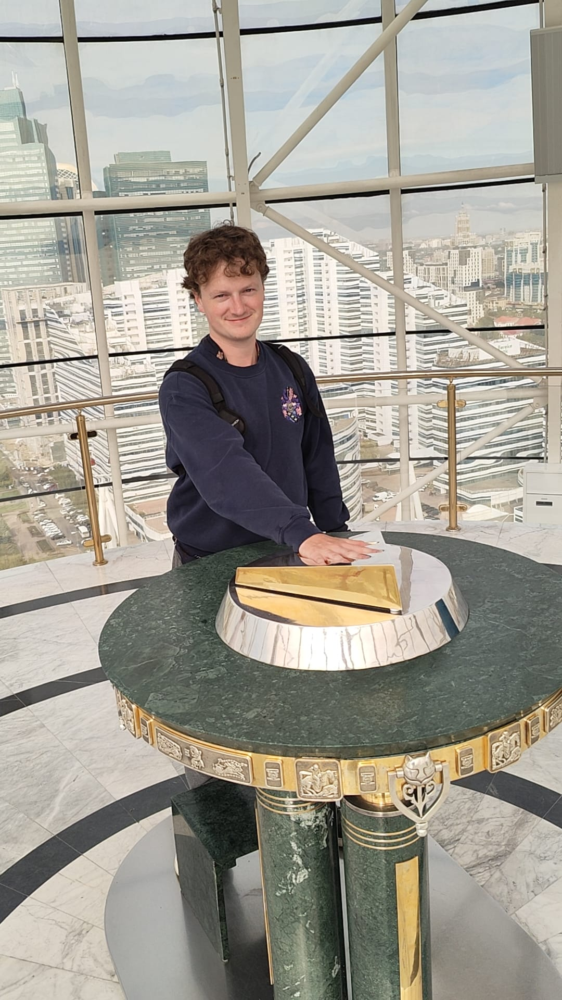
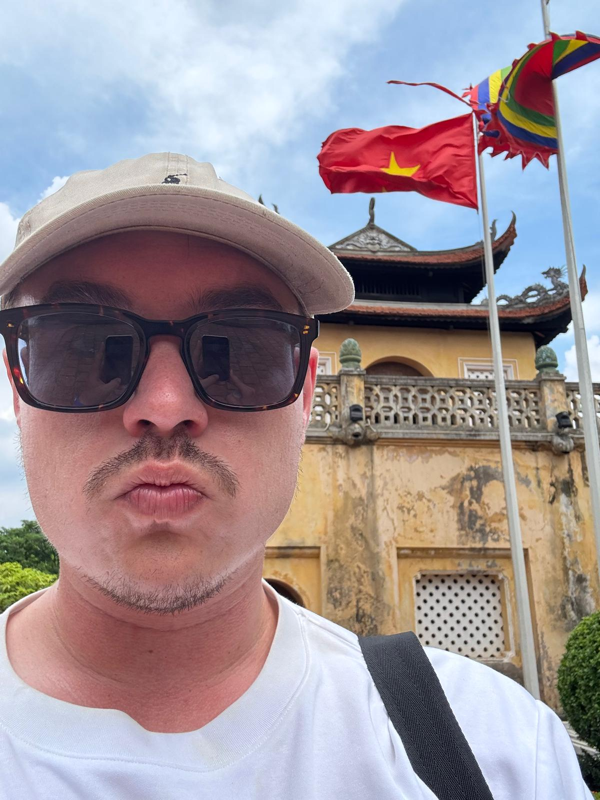

17 maart 2026
NTKF opgericht
Nederland heeft nu een eigen Toguz Korgool federatie! De NTKF is opgericht met als doel het spel in Nederland te promoten en Nederlandse spelers internationaal te vertegenwoordigen.
Lees meer →Het eeuwenoude strategiespel uit Centraal-Azië — nu in Nederland
Toguz Korgool is sinds 2020 erkend als Immaterieel Cultureel Erfgoed van de Mensheid door UNESCO.
31 augustus – 6 september 2026 in Kirgizistan. Nederland doet mee!
De NTKF staat open voor iedereen. Geen ervaring nodig — we helpen je op weg.
Een van de oudste en diepste strategiespellen ter wereld
Toguz Korgool (Kirgizisch voor "negen stenen") is een strategisch bordspel uit de mancala-familie, al duizenden jaren gespeeld in Centraal-Azië. Het spel wordt gespeeld op een bord met twee rijen van negen kuiltjes, met aan elke kant een kazan (vangbak). Elke partij begint met 162 stenen — 9 in elk kuiltje.
Spelers verdelen om de beurt stenen uit een kuiltje over het bord (dit heet zaaien). Het doel is om meer dan 81 stenen in je kazan te verzamelen. Een uniek element is de tuz: een speciaal veroverd kuiltje bij de tegenstander dat continu stenen voor je opvangt.
Startopstelling: 9 stenen in elk van de 18 kuiltjes (162 totaal)
De NTKF zet zich in voor de promotie en ontwikkeling van Toguz Korgool in Nederland

Medeoprichter & Speler
FIDE-rated schaker (~2150), nu actief in Toguz Korgool met als doel Nederland te vertegenwoordigen op de World Nomad Games 2026.

Medeoprichter & Speler
Mede-initiatiefnemer van de NTKF en ambassadeur voor Toguz Korgool in Nederland. Als doel om Nederland te vertegenwoordigen op de World Nomad Games 2026.
Er zijn verschillende manieren om bij te dragen aan Toguz Korgool in Nederland
Leer Toguz Korgool spelen, oefen online en neem deel aan toernooien. Ervaring met het spel is niet nodig — we helpen je op weg. Achtergrond in schaken of andere strategiespellen is een plus!
AanmeldenHelp mee met de organisatie van evenementen, communicatie, websitebeheer of het opzetten van lokale speelgroepen. Elke bijdrage telt!
Neem contact opSchaakverenigingen, spellenclubs, culturele organisaties en bedrijven die Toguz Korgool willen ondersteunen zijn van harte welkom als partner.
SamenwerkenHet laatste nieuws van de NTKF
Nederland heeft nu een eigen Toguz Korgool federatie! De NTKF is opgericht met als doel het spel in Nederland te promoten en Nederlandse spelers internationaal te vertegenwoordigen.
Lees meer →De NTKF bereidt zich voor op deelname aan de World Nomad Games 2026 in Kirgizistan. Nederland gaat voor het eerst meedoen aan het Toguz Korgool-toernooi!
Lees meer →We organiseren binnenkort de eerste Toguz Korgool-workshop in Nederland. Leer de basisregels en speel je eerste partijen onder begeleiding.
Lees meer →Vragen, suggesties of wil je je aanmelden? Neem contact op!